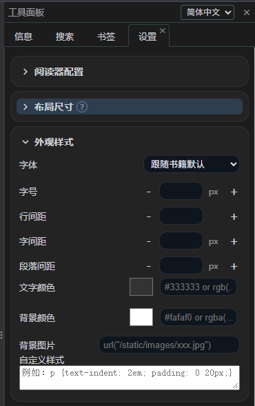

外观与主题
外观设置只改变显示方式，不会改动书的内容和文件。

字体与字号
- 字体：可选内置字体或「书默认」。使用本机字体时，浏览器可能会询问权限。
- 字号：整体放大或缩小正文。
- 行距 / 字距 / 段间距：分别控制行与行、字与字、段落之间的距离。
颜色与背景
- 文字颜色：支持十六进制（如
#333333）或rgb(...)。 - 背景颜色：支持
#rrggbb或rgba(...)，留空则「跟随原书」。 - 背景图片：填写一个 CSS 背景图地址。
- 留空表示「跟随原书」，不会强行覆盖。
自定义 CSS
熟悉 CSS 的话，可以进一步调整正文样式，例如首行缩进：
p { text-indent: 2em; }
不熟悉的话保持留空即可。
明暗主题
快捷工具条上有一个明暗切换按钮，切换的是阅读器界面的主题。它与上面的背景色是两件事：主题管界面，背景色管正文。